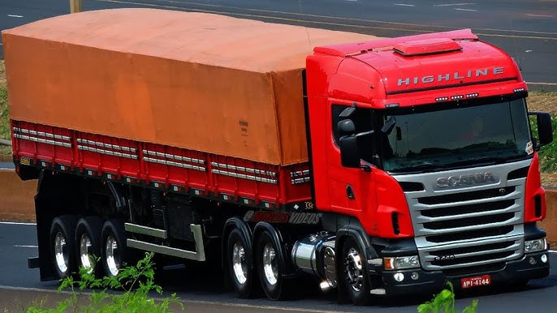
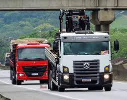
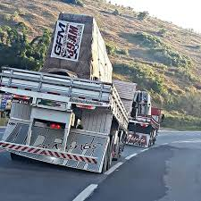

Os caminhões, verdadeiros gigantes das estradas, desempenham um papel vital em nossa sociedade globalizada. Desde o transporte de mercadorias essenciais até a movimentação de materiais pesados, esses veículos robustos são os motores invisíveis que impulsionam nossa economia. Em nossa exploração visual, mergulhe na complexidade tecnológica dos caminhões modernos e aprenda sobre seu impacto significativo no comércio, na indústria e na vida cotidiana.
Convidamos você a testemunhar a evolução dos caminhões ao longo do tempo, desde os modelos clássicos que marcaram época até os avançados veículos de carga do século XXI. Explore nossas imagens cuidadosamente selecionadas, capturando a majestade dessas máquinas em diferentes contextos e cenários. Cada foto conta uma história única, desde caminhões atravessando paisagens pitorescas até operações industriais impressionantes que destacam a engenhosidade humana.
Além de apreciar a estética imponente dos caminhões, também vamos mergulhar nos bastidores, explorando os motores poderosos, os sistemas de transporte inteligentes e as inovações tecnológicas que tornam esses veículos verdadeiros líderes da estrada. Prepare-se para uma jornada emocionante pelo mundo dos caminhões, onde a força, a eficiência e a engenhosidade se encontram.
